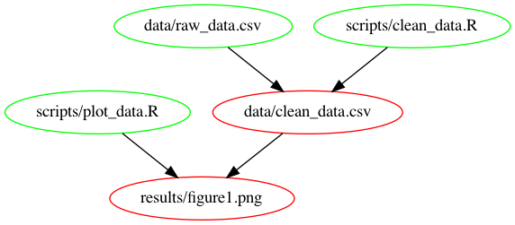
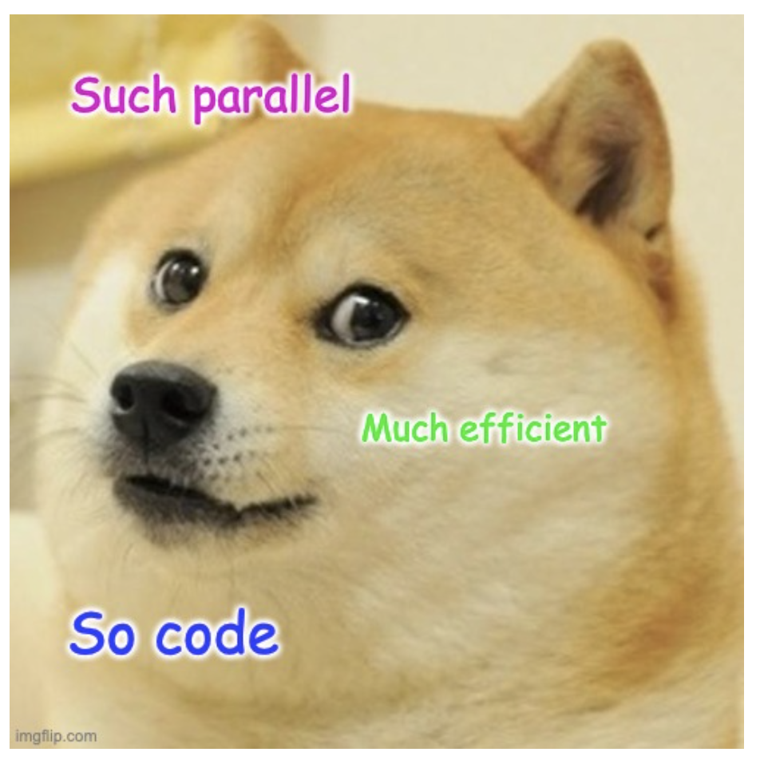
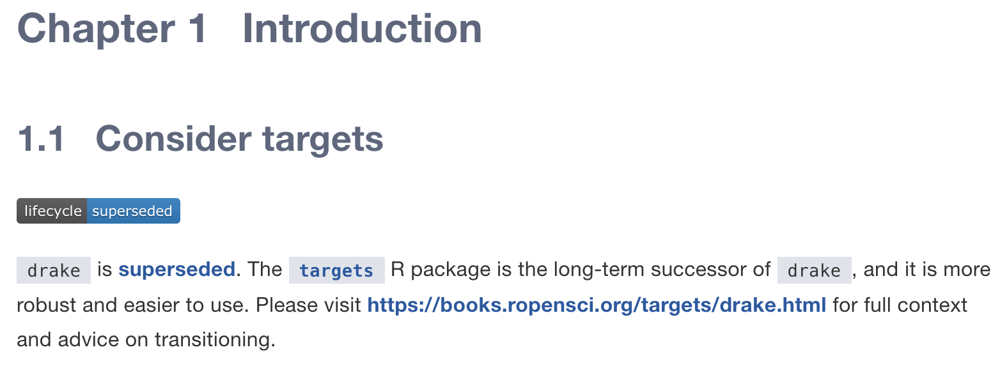
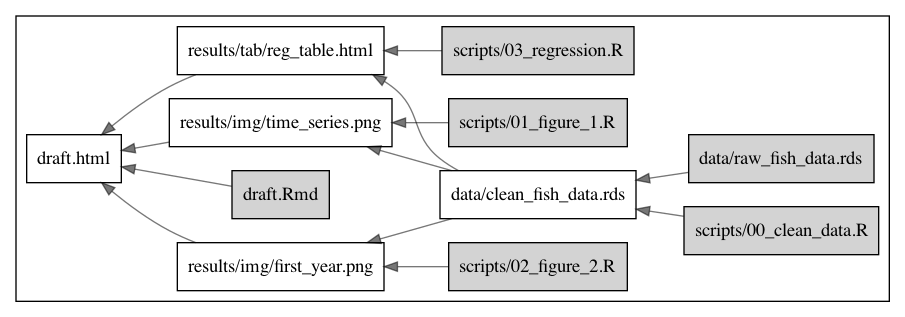

make and Makefile for rerpoducibilityWe’ll simulate everyone’s nightmare:
The solution lies in the problem
The problem lies in the solution to the original problem

lapplypurrr + furrr
run_all.RHave a script:
And either call source(run_all.R) or manually source the ones that we think we need to run.
Do I even need to actually run all?
What if scripts 1 and 2 take 20 hours, but I only need to update an axis label?
What if variables / values are left in my environment?
It worked when I wrote it, but not anymore
What if the timing isn’t correct?

makemake and MakefileFrom GNU’s website:
“GNU Make is a tool which controls the generation of executables and other non-source files of a program from the program’s source files.”
make “looks” for a file called MakefileMakefile, listing all the good stuffMakefile for this project?And one command does it all: make
For this, we need graphviz and makefile2graph
-Bnd tells make to “B: Unconditionally make all targets, n: just print, d: print debug info”| is just the OG pipe-Tpng tells dot “T use the following output format: png”$@: the file name of the target$<: the name of the first prerequisite$^: the names of all prerequisites$(@D): the directory part of the target$(@F): the file part of the target$(<D): the directory part of the first prerequisite$(<F): the file part of the first prerequisite$(<D) and $(<F)Can be written as
Imagine you have something like this:
results/figure1.png: scripts/figure1.R
Rscript scripts/figure1.R
results/figure2.png: scripts/figure2.R
Rscript scripts/figure2.R
results/figure3.png: scripts/figure3.R
Rscript scripts/figure3.R
results/figure4.png: scripts/figure4.R
Rscript scripts/figure4.R
results/figure5.png: scripts/figure5.R
Rscript scripts/figure5.R
.
.
.
.
.
.Writing out this chunk \(n\) times presents opportunity for \(\alpha n\) errors:
Instead, we use pattern rules with %, which is equivalent to *
(I think it’s cool that the workflow induces standardization)
You can include them:

The repo is here: https://github.com/jcvdav/make_tutorial
make the projectmakeing the project (end-to-end update)makeint the project once again (end-to-end update)